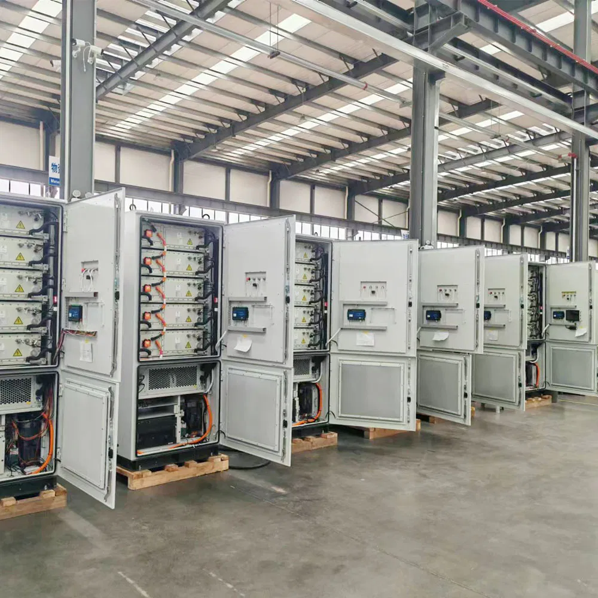

Buyer guide / 01
Plan the storage.
Protect the operation.
Start with what your site needs to do. A useful battery project connects the operating goal, load profile, electrical design and delivery scope before equipment is selected.
Read the planning guide
01 / Operating priority
Decide what storage must accomplish.
A battery can support several objectives, but those objectives do not always use the same reserve or operating schedule. An installation intended to discharge every evening may need a different control strategy from one reserved for unexpected outages.
- Business continuity: maintain agreed essential loads during an interruption.
- Solar self-consumption: use part of the daytime surplus later in the day.
- Demand management: coordinate battery discharge with peaks in site demand.
- Remote or weak-grid operation: coordinate generation, storage and a backup source around local conditions.
Identify the primary goal, then rank secondary goals. If backup is essential, agree which state of charge must remain available and when other uses may consume it.
02 / Load definition
Separate essential loads from the whole site.
List the equipment that needs power, its normal running demand and the hours it operates. Include starting behaviour for motors, pumps, compressors and refrigeration. A daily energy bill alone cannot show short peaks or how different loads overlap.
For backup, define an essential-load panel where appropriate and agree which equipment may be switched off. Record the required continuity: a light that can briefly go off has a different requirement from a control system that cannot tolerate an interruption. Confirm any required transfer behaviour with the selected equipment and the site designer.
What to send first
A recent bill, a list of essential loads, typical operating hours, available interval-meter data and a simple site electrical diagram. If measurements are incomplete, identify the gaps before treating an estimate as a final design.
03 / Sizing basics
Check power and usable energy separately.
Power describes the demand the system must supply at a moment in time. Energy describes how much it must deliver over a period. A larger energy cabinet does not automatically provide enough instantaneous power for every site load.
For an early energy discussion, add the energy used by each agreed load over the required period. The selected system then needs allowances for conversion losses, permitted battery operating range, environmental conditions, auxiliary consumption and an agreed reserve. Check the manufacturer’s definition of usable energy rather than assuming the nameplate energy is fully available.
Also review charging. Where the battery charges from solar, confirm the energy available after daytime site consumption. Where it charges from the grid or generator, confirm available power, charging windows and operating restrictions. The design must be able to recover after the backup event you are planning for.
04 / Integration
Review the connections that make it work.
A complete storage installation may include battery modules, a power conversion system, battery management, site energy management, protection, switchgear, metering and communications. Confirm who supplies each part and which interfaces are supported.
- Electrical: voltage, frequency, phases, fault protection, isolation, grounding and the connection point.
- Control: operating modes, battery reserve, export limits, generator commands and load priorities.
- Communication: compatible protocols, monitoring access, alarms and the data connection.
- Backup architecture: source separation, transfer equipment, supported loads and recovery after a shutdown.
Ask for a project single-line diagram and a clear equipment schedule. Compatibility should be confirmed for the actual battery and inverter combination, including firmware and communication requirements.
05 / Installation & operation
Plan the space and the people around the cabinet.
Share the installation environment, temperature conditions, access route, available floor space and exposure to rain, dust or salt. Review foundation requirements, service clearances, ventilation or cooling, cable routes and local electrical and fire requirements with qualified site professionals.
Handover should explain normal operation, emergency procedures, alarm escalation and maintenance access. Confirm who commissions the installation, who can adjust settings and how remote access is controlled. Warranty scope, replacement arrangements and response channels belong in the commercial agreement.
For a useful operating baseline, retain commissioning records, settings, serial numbers, manuals and photographs. These records help distinguish an equipment fault from an installation, communication or configuration issue later.
06 / Procurement
Make quotations comparable.
Ask each supplier to quote the same operating target and the same delivery boundary. Compare the selected model, usable energy definition, continuous and peak power, included protection and controls, installation scope, destination documents, warranty terms and support arrangements.
Record exclusions as clearly as inclusions. Site civil work, cabling, switchboards, freight, unloading, local permits and commissioning can materially change the final project cost. A short scope matrix is more useful than comparing cabinet prices alone.
Your next step
Use the export project checklist to gather the information for a scoped quotation, then review the energy storage product page with your project team.
Further technical reading: SMA off-grid system design guidance, alongside the installation manuals for your selected equipment.
Bring your site brief
Turn a storage idea
into a defined project.
Send the installation country, load information and operating goal. We can start with the questions that shape the equipment and delivery scope.